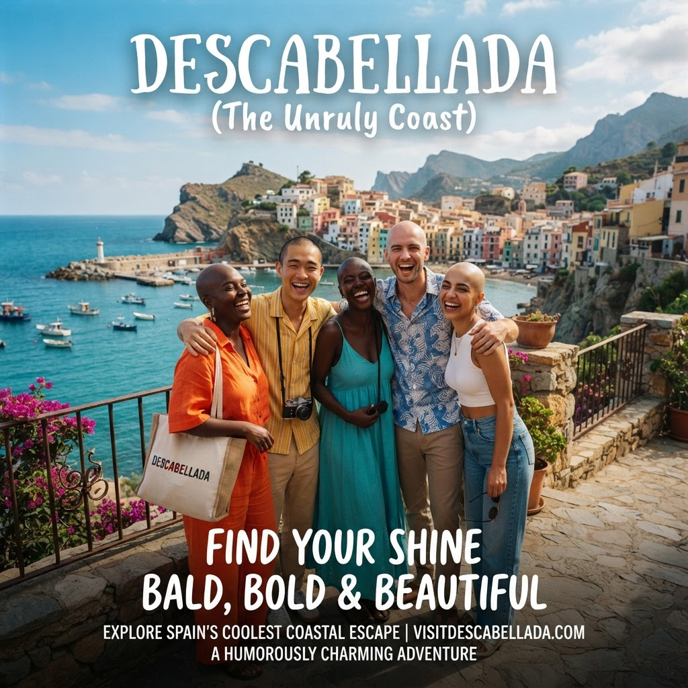

Mirador de la Cabeza
Zona: Alto del Faro.
Subí al mirador para contemplar el mar, sacar fotos y escuchar historias locales. Se recomienda al atardecer.
Qué visitar
Conocé los rincones donde Descabellada muestra su mejor personalidad.
Zona: Alto del Faro.
Subí al mirador para contemplar el mar, sacar fotos y escuchar historias locales. Se recomienda al atardecer.

Zona: Centro histórico.
Un punto de encuentro con ferias, música y propuestas culturales. Ideal para conocer costumbres.

Zona: Puerto viejo.
Visitá el local de Braian Venche, descubrí su colección de peluquines y conocé una tradición muy descabellada.